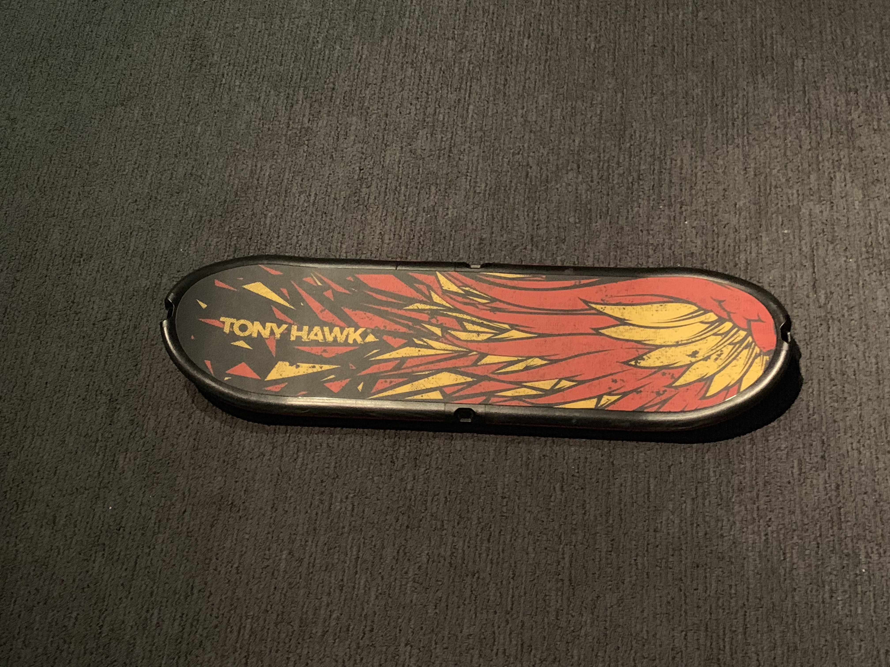
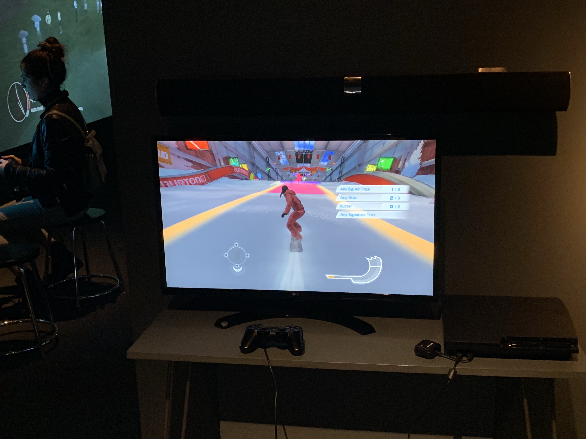

but that's not the only thing i saw ther was also a skateboard with out wheels. now you may think whats so interesting about this. Well what makes it interesting this that games usually involve a controller or a joystick but this one game uses a mechanical skateboard contoller that acts like a regular controller and the game that lets this skatebaord to be used is a Tony hawks game.
  1 2 4